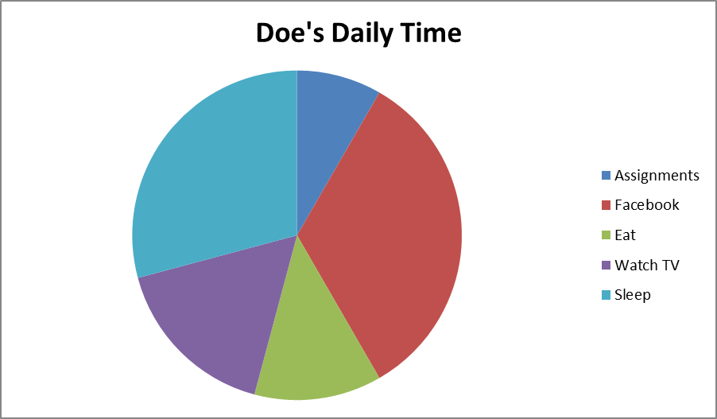
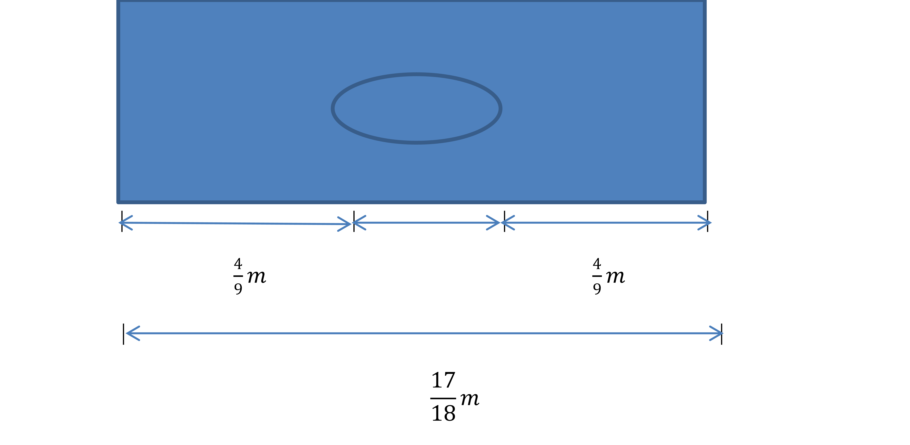

I greet you this day,
First: Review the Notes/eText.
Second: View the Videos/Multimedia Resources.
Third: Practice questions and receive instant feedback. NO Calculators allowed.
Fourth: Solve the questions/solved examples.
Fifth: Check your solutions with my thoroughly-explained solved examples.
Sixth: Check your answers with the calculators as applicable.
I wrote the codes for the calculators using JavaScript, a client-side scripting language and AJAX, a JavaScript library.
Please use the latest Internet browsers. The calculators should work.
Comments, ideas, areas of improvement, questions, and constructive criticisms are welcome. You may contact me.
If you are my student, please do not contact me here. Contact me via the school's system.
Samuel Dominic Chukwuemeka (SamDom For Peace) B.Eng., A.A.T, M.Ed., M.S
Students will:
(1.) Define natural numbers.
(2.) Define whole numbers.
(3.) Define fractions.
(4.) Define rational numbers.
(5.) Define decimals.
(6.) Define percents.
(7.) Write whole numbers as rational numbers.
(8.) Write mixed numbers as rational numbers.
(9.) Determine if a given rational number is a repeating decimal.
(10.) Determine if a given rational number is a terminating decimal.
(11.) Write fractions as decimals.
(12.) Write mixed numbers as decimals.
(13.) Write terminating decimals as fractions.
(14.) Order rational numbers from least to greatest.
(15.) Order rational numbers from greatest to least.
(16.) Solve real-world problems involving rational numbers.
(17.) Add fractions with same denominators.
(18.) Subtract fractions with same denominators.
(19.) Add mixed numbers with same denominators.
(20. Subtract mixed numbers with same denominators.
(21.) Simplify variable expressions involving Like fractions.
(22.) Solve linear equations in one variable involving Like fractions.
(23.) Check the solutions of linear equations in one variable involving Like fractions.
(24.) Solve real-world problems involving Like fractions.
(25.) Add fractions with different denominators.
(26.) Subtract fractions with different denominators.
(27.) Add mixed numbers with different denominators.
(28. Subtract mixed numbers with different denominators.
(29.) Simplify variable expressions involving Unlike fractions.
(30.) Solve linear equations in one variable involving Unlike fractions.
(31.) Check the solutions of linear equations in one variable involving Unlike fractions.
(32.) Solve real-world problems involving Unlike fractions.
(33.) Write percents as fractions.
(34.) Write fractions as percents.
(35.) Write percents as decimals.
(36.) Determine the percent of a given number.
(37.) Solve algebraic expressions involving percents.
(38.) Solve algebraic equations involving percents.
(39.) Solve real-world problems involving percents.
(1.) Use of prior knowledge
(2.) Critical Thinking
(3.) Interdisciplinary connections/applications
(4.) Technology
(5.) Active participation through direct questioning
(6.) Student collaboration in Final Project
natural number, counting number, whole number, fraction, numerator, denominator, proper fraction, improper fraction, rational number, integer, mixed number, decimal, terminating decimal, exact decimal, repeating decimal, recurring decimal, irrational number, real number, complex number, add, sum, subtract, difference, multiply, product, divide, quotient, "like" fractions, "unlike" fractions, variable expressions, linear equations, equivalent fractions, same denominators, different denominators, common denominator, least common multiple (LCM)/least common denominator (LCD), proportions, equations, greatest common factor (GCF)/greatest common divisor (GCD)/highest common factor (HCF), prime factorization, left hand side (LHS), right hand side (RHS), percent, percentages, ratio, arithmetic, arithmetic operators, augend, addend, minuend, subtrahend, multiplier, multiplicand, factor, dividend, divisor, positive, negative, nonpositive, nonnegative, constant, number, variable, term, equal, equality, ratios, significant digits, significant numbers, nearest ten, nearest tenth, nearest hundred, nearest hundredth, nearest cent,
A natural number is any positive integer.
It is also known as a counting number. It is a number you can count.
It does not include zero.
It does not include the negative integers.
It is not a fraction.
It is not a decimal.
A whole number is any nonnegative integer.
It includes zero and the positive integers.
It does not include the negative integers.
It is not a fraction.
It is not a decimal.
An integer is any whole number or its opposite.
Integers include the whole numbers and the negative values of the whole numbers.
Ask students to explain:
(1.) The difference between a positive integer and a nonnegative integer
(2.) The difference between a negative integer and a nonpositive integer
A fraction is a part of a whole.
It is the part of something out of a whole thing.
It is also seen as a ratio.
It is also seen as a quotient.
The numerator is the part.
It is the top part of the fraction.
The denominator is the whole.
It is the bottom part of the fraction.
A proper fraction is a fraction whose numerator is less than the denominator.
An improper fraction is a fraction whose numerator is greater than or equal to the denominator.
A mixed number is a combination of an integer and a proper fraction.
A decimal is a linear array of digits that represent a real number, expressed in a decimal system with a decimal point; and in which every decimal place indicates a multiple of negative power of 10.
A terminating decimal is a decimal with a finite number of digits.
A terminating decimal is also known as an exact decimal.
A repeating decimal is a decimal in which one or more digits is repeated indefinitely in a pattern or sequence.
A repeating decimal is also known as a recurring decimal.
A non-repeating decimal is a decimal in which there is no sequence of repeated digits indefinitely.
A non-repeating decimal is also known as a non-recurring decimal.
A rational number is any number that can be written as a fraction where the denominator is not equal to zero.
You can also say that a rational number is a ratio of two integers where the denominator is not equal to zero.
A rational number is a number that can be written as: $${c\over d}$$ where $c, d$ are integers and $d \neq 0$
A rational number can be an integer.
It can be a terminating decimal. Why?
It can be a repeating decimal. Why?
It cannot be a non-repeating decimal. Why?
Ask students to tell you what happens if the denominator is zero.
An irrational number is a number that cannot be expressed as a fraction, terminating decimal, or repeating decimal.
When you compute irrational numbers, they are non-repeating decimals.
A real number is any rational or irrational number.
It includes all numbers that can be found on the real number line.
A complex number is a number that can be expressed in the form of $a + bi$ where $a \:and\: b$ are real numbers, and $i$ is an imaginary number equal to the square root of $-1$.
Variable Expressions are expressions that contain variables.
Linear Equations are equations in which the highest degree of the variable in the equation is 1.
Equivalent Fractions are two or more fractions that have the same value when they are expressed in their simplest forms.
Common Denominators are the common multiples of the different denominators of unlike fractions.
Least Common Denominator is the least of all the common multiples of the different denominators of unlike fractions.
A prime number is a whole number greater than $1$, which is divisible by only $1$ and itself without a remainder.
Let us look at a prime number in another way...in terms of Factors and Multiples
$
Say: \\[3ex]
2 * 3 = 6 \\[3ex]
2\:\:is\:\:a\:\:factor\:\:of\:\:6 \\[3ex]
3\:\:is\:\:a\:\:factor\:\:of\:\:6 \\[3ex]
6\:\:is\:\:a\:\:multiple\:\:of\:\:2 \\[3ex]
6\:\:is\:\:a\:\:multiple\:\:of\:\:3 \\[3ex]
NOTE: \\[3ex]
1\:\:is\:\:a\:\:factor\:\:of\:\:Everything \\[3ex]
Everything\:\:is\:\:a\:\:multiple\:\:of\:\:1 \\[3ex]
$
A prime number is a number whose factors are only $1$ and itself.
In other words, for a prime number: the only factors are $1$ and that number. No other number is a factor.
Examples include: $2, 3, 5, 7, 11, 13, 17, 19$, etc.
Prime Factorization is a method used for finding the least common denominator of unlike fractions, in which each denominator
is broken down into a product of prime numbers.
This means that each denominator is split into a product of prime factors.
This means that the prime factorization of a number is the product of it's prime factors.
In other words, the prime factorization of a number is the product of it's factors that are prime numbers.
The basic arithmetic operators are the addition symbol, $+$, the subtraction symbol, $-$, the multiplication
symbol, $*$, and the division symbol, $\div$
Augend is the term that is being added to. It is the first term.
Addend is the term that is added. It is the second term.
Sum is the result of the addition.
$$3 + 7 = 10$$ $$3 = augend$$ $$7 = addend$$ $$10 = sum$$
Minuend is the term that is being subtracted from. It is the first term.
Subtrahend is the term that is subtracted. It is the second term.
Difference is the result of the subtraction.
$$3 - 7 = -4$$ $$3 = minuend$$ $$7 = subtrahend$$ $$-4 = difference$$
Multiplier is the term that is multiplied by. It is the first term.
Multiplicand is the term that is multiplied. It is the second term.
Product is the result of the multiplication.
$$3 * 10 = 30$$ $$3 = multiplier$$ $$10 = multiplicand$$ $$30 = product$$
Dividend is the term that is being divided. It is the numerator.
Divisor is the term that is dividing. It is the denominator.
Quotient is the result of the division.
Remainder is the term remaining after the division.
$$12 \div 7 = 1 \:R\: 5$$ $$12 = dividend$$ $$10 = divisor$$ $$1 = quotient$$ $$5 = remainder$$
A constant is something that does not change. In mathematics, numbers are usually the constants.
A variable is something that varies (changes). In Mathematics, alphabets are usually the variables.
A mathematical expression is a combination of variables and/or constants using arithmetic operators.
A mathematical equation is an equality of two terms - the term or expression on the LHS (Left Hand Side) and
the term or expression on the RHS (Right Hand Side).
This implies that we should always check the solution of any equation that we solve to make sure the LHS is
equal to the RHS.
Whenever we solve for the variable in "any" equation, how do we know we are correct? CHECK!
The solution of an equation is the value of the variable which when substituted in the equation ensures that
the LHS is equal to the RHS.
The solution of an equation is also known as the root of the equation or the zero of the
function.
The solutions of an equation are the values of the variables which when substituted in the equation ensures
that the LHS is equal to the RHS.
The solutions of an equation are also referred to as the roots of the equation or the zeros of
the function.
A percent means something out of $100$.
A ratio is a comparison of two quantities.
A proportion is the equality of two ratios.
A fraction is a part of a whole.
It is the part of something out of a whole thing.
It is also seen as a ratio.
It is also seen as a quotient.
The numerator is the part.
It is the top part of the fraction.
The denominator is the whole.
It is the bottom part of the fraction.
A proper fraction is a fraction whose numerator is less than the denominator.
An improper fraction is a fraction whose numerator is greater than or equal to the denominator.
Like Fractions are fractions with the same denominator.
Unlike Fractions are fractions with different denominators.
To convert:
Fraction to Percent: multiply the fraction by 100.
Percent to Fraction: divide the percent by 100 and leave it as a fraction; then simplify the fraction as applicable.
Fraction to Decimal: divide the numerator by the denominator and leave the result as a decimal.
Decimal to Fraction: It depends on the type of decimal.
For exact decimals: you may do any of these approaches:
(1.) Convert to percent and then convert to fraction. Then, simplify the fraction.
(2.) Write the decimal as a fraction by writing 1 under the decimal point and zeros under the numbers after the decimal point. Then, simplify the fraction.
For repeating decimals: you may do any of these approaches:
(1.) 1st Approach: Algebra :
Set a variable to be equal to the repeating decimal...this becomes an algebraic equation...Call it: Equation 1
If there is a value before the decimal point, multiply both sides of the equation by 10
If there are two values before the decimal point, multiply both sides of the equation by 100
If there are three values before the decimal point, multiply both sides of the equation by 1000
If there are two values before the decimal point, multiply both sides of the equation by ?????
Call it: Equation 2
Subtract Equation 1 from Equation 2
This gives an integer coefficient of the variable on the Left Hand Side (LHS) and an integer on the Right Hand Side (RHS)
Divide both sides by the integer coefficient of the variable. This isolates the variable.
Simplify the fraction on the RHS.
For non-repeating decimals (irrational numbers); they cannot be expressed as a ratio.
This implies that they cannot be expressed as fractions.
For examples, please review Decimals and Decimal Applications
(1.) $\dfrac{2}{3}$ of the students in Mr. C's class are females and $\dfrac{1}{3}$ are males.
Common denominator = $3$
(2.) $48$ of the $50$ states in the United States are in the continental US while $2$ of the $50$ states are not.
Common denominator = $50$
(3.) $9$ in every $10$ leaders in Nigeria are corrupt (hence the poor masses suffer terribly) while $1$ in every
$10$ Nigerians are probably not.
Common denominator = $10$
(4.) Peace bought a large pizza and divided it into $12$ equal parts for her $12$ children. Each child got a part.
Common denominator = $12$
(5.) $\dfrac{2}{5}$ of the students in Mr. C's class are females. $\dfrac{1}{3}$ of those females do not like math.
Different denominators = $5 \:and\: 3$
(6.) $9$ in every $10$ leaders in Nigeria are corrupt (hence the poor masses suffer terribly) while $1$ in every $5$
Nigerians live in less than $1 a day.
Different denominators = $10 \:and\: 5$
(7.) Felicity bought a large pizza and shared it among her $5$ children. The first child got one-half of the pizza.
The second child got one-quarter of the pizza.
Different denominators = $2 \:and\: 4$
(8.) Haggai bought a large pizza and shared it among her $5$ children. The first child got one-half of the pizza.
The second child got one-quarter of the remainder.
Different denominators = $2 \:and\: 8$
To add two or more "Like Fractions":
Add the numerators of the fractions.
Keep the common denominator.
Simplify, or convert to a mixed number as necessary.
To subtract two or more "Like Fractions":
Subtract the numerators of the fractions.
Keep the common denominator.
Simplify, or convert to a mixed number as necessary.
(1.) Add $\dfrac{3}{16} \:and\: \dfrac{11}{16}$
$
\dfrac{3}{16} + \dfrac{11}{16} \\[5ex]
= \dfrac{3 + 11}{16} \\[5ex]
= \dfrac{14}{16} \\[5ex]
= \dfrac{7}{8}
$
(2.) Subtract $\dfrac{3}{16} \:from\: \dfrac{11}{16}$
$
\dfrac{11}{16} - \dfrac{3}{16} \\[5ex]
= \dfrac{11 - 3}{16} \\[5ex]
= \dfrac{8}{16} \\[5ex]
= \dfrac{1}{2}
$
(3.) Subtract $\dfrac{11}{16} \:from\: \dfrac{3}{16}$
$
\dfrac{3}{16} - \dfrac{11}{16} \\[5ex]
= \dfrac{3 - 11}{16} \\[5ex]
= -\dfrac{8}{16} \\[5ex]
= -\dfrac{1}{2}
$
Ask students to explain the difference between Question 2 and Question 3 based on the terminology used.
(4.) Simplify $c + d - e$ if $c = \dfrac{9}{61}, d = \dfrac{40}{61}, \:and\: e = \dfrac{15}{61}$
$
\dfrac{9}{61} + \dfrac{40}{61} - \dfrac{15}{61} \\[5ex]
= \dfrac{9 + 40 - 15}{61} \\[5ex]
= \dfrac{34}{61}
$
(5.) Solve and Check for the variable in the equation: $p - \dfrac{1}{14} = \dfrac{5}{14}$
$
Add\: \dfrac{1}{14} \:to\: \:both\: \:sides \\[5ex]
p - \dfrac{1}{14} + \dfrac{1}{14} = \dfrac{5}{14} + \dfrac{1}{14} \\[5ex]
= \dfrac{5 + 1}{14} \\[5ex]
= \dfrac{6}{14} \\[5ex]
= \dfrac{3}{7}
$
| Left Hand Side (LHS) | Right Hand Side (RHS) |
|---|---|
|
$$ p - \dfrac{1}{14} \\[5ex] \dfrac{3}{7} - \dfrac{1}{14} \\[5ex] \dfrac{6}{14} - \dfrac{1}{14} \\[5ex] \dfrac{6 - 1}{14} \\[5ex] \dfrac{5}{14} $$ |
$$ \dfrac{5}{14} $$ |
(6.) Francis completed $\dfrac{12}{28}$ of his humanitarian project 2 weeks ago.
Last week, he completed $\dfrac{6}{28}$ of his project.
What portion of his project has he not completed?
$
Portion \:of\: \:his\: \:project\: \:completed\: \\[3ex]
= \dfrac{12}{28} + \dfrac{6}{28} \\[5ex]
= \dfrac{12 + 6}{28} \\[5ex]
= \dfrac{18}{28} \\[5ex]
Entire \:project\: = 1 = \dfrac{28}{28} \\[5ex]
Portion \:of\: \:his\: \:project\: \:not\: \:completed\: \\[3ex]
= \dfrac{28}{28} - \dfrac{18}{28} \\[5ex]
= \dfrac{28 - 18}{28} \\[5ex]
= \dfrac{10}{28} \\[5ex]
= \dfrac{5}{14}
$
| Questions | Answers (Click "Answer:" to show/hide answers) |
|---|---|
|
$$\dfrac{5}{24} + \dfrac{2}{24}$$
|
|
|
$$\dfrac{5}{24} - \dfrac{2}{24}$$
|
|
|
$$\dfrac{19a}{32} - \dfrac{27a}{32} + \dfrac{4a}{32}$$
|
|
|
Solve and Check for the variable in the equation:
$$x - \dfrac{3}{4} = \dfrac{4}{14}$$
|
|
|
Solve and Check for the variable in the equation:
$$\dfrac{17}{25} = k + -\dfrac{3}{25}$$
|
|
|
Margaret is still owing $\dfrac{7}{10}$ of her auto loan.
She just paid $\dfrac{3}{10}$ of her loans. What fraction is still owed? |
|
|
Philemon purchased $\dfrac{9}{10}$ acre of land in 1997 and $\dfrac{3}{10}$ acre in 1998.
He planted tomatoes on $\dfrac{7}{10}$ acre of the land and corn on the remainder. How much land is planted in corn? |
|
|
St. Vincent de Paul's Charities raised $\dfrac{5}{12}$ of their fundraising goal in the morning.
By afternoon, they received a donation of $\dfrac{11}{12}$ of their goal. By what fraction was their goal surpassed? |
To add or subtract two or more "Unlike Fractions":
Change the different denominators of the unlike fractions to a least common denominator. In other words; of all the common denominators, select the least.
Convert those unlike fractions to like fractions based on their least common denominator. In other words, find the equivalent fractions based on the least common denominator.
Add or subtract the numerators of the fractions as the case may be.
Keep the common denominator.
Simplify, or convert to a mixed number as necessary.
Least Common Denominator is the least of all the common multiples of the different denominators of unlike fractions.
The least common denominator (LCD) is also referred to as the least common multiple (LCM).
There are three methods of determining the LCM.
(1.) Listing Multiples Method
List the multiples of each of the denominators in ascending order, and stop until you get the first common multiple of both denominators.
This method is usually the "more work".
(2.) Prime Factorization Method
Find the prime factorization of each of the denominators.
Then, the least common denominator is found by multiplying all the products of the prime factors.
In doing so; it is important to note that if the same number is a factor of both denominators, that number should be counted as only one factor.
This method is the "most popular".
(3.) Nigerian Method
I learned this method in the elementary school in Nigeria. I have forgotten the name of the method. It works!
It can calculate the least common multiple of two or more positive integers.
In this method; we set up a table of the positive integers.
We set it up the same way we set up the dividend and divisor in the Long Division method of dividing polynomials.
We "try" each factor in ascending order (from least to greatest).
But, if we find another factor of all the integers (a number that divides all the integers "right away" without a remainder), use it.
The factor should be a positive integer that has to divide "all" the positive integers without a remainder.
In other words, it has to be a common factor.
If we cannot find any factor, then we divide with the smallest "given" integer.
Use the "factor" to divide each positive integer.
If that "factor" divides any integer, write the quotient.
If that "factor" does not divide any integer, write the integer "as is"
Multiply all the factors you listed.
The product gives you the $LCM$.
(1.) Find the least common multiple of $3 \:and\: 15$
First Method: Listing Multiples Method
Multiples of $3$ are 3, 6, 9, 12, 15, ...
Multiples of $15$ are 15, ... stop here
Common multiple = $15$
$LCM = 15$
Second Method: Prime Factorization Method
The prime factorization of:
$3 = 3$
$15 = 3 * 5$
$3$ occurred twice in $3 \:and\: 15$, so we count it only one time.
$LCM = 3 * 5 = 15$
Third Method: Nigerian Method
$$
\begin{array}{c|c c}
3 & 3 & 15 \\
\hline
5 & 1 & 5 \\
\hline
& 1 & 1
\end{array}
$$
The last numbers are only $1$'s
STOP.
The factors listed are $3$ and $5$
Multiply them.
$LCM(3, 15) = 3 * 5 = 15$
(2.) Find the least common multiple of $12 \:and\: 16$
First Method: Listing Multiples Method
Multiples of $12$ are 12, 24, 36, 48, ...
Multiples of $16$ are 16, 32, 48, ...
Common multiple = $48$
$LCM = 48$
Second Method: Prime Factorization Method
The prime factorization of:
$12 = 2 * 2 * 3$
$16 = 2 * 2 * 2 * 2$
$2$ occurred twice in $12 \:and\: 16$, so we count it only one time.
$2$ occurred twice in $12 \:and\: 16$, so we count it only one time.
$LCM = 2 * 2 * 3 * 2 * 2 = 48$
Third Method: Nigerian Method
$$
\begin{array}{c|c c}
4 & 12 & 16 \\
\hline
3 & 3 & 4 \\
\hline
4 & 1 & 4 \\
\hline
& 1 & 1
\end{array}
$$
The last numbers are only $1$'s
STOP.
The factors listed are $4, 3$ and $4$
Multiply them.
$LCM(12, 16) = 4 * 3 * 4 = 48$
(3.) Find the least common multiple of $20 \:and\: 25$
First Method: Listing Multiples Method
Multiples of $20$ are 20, 40, 60, 80, 100, ...
Multiples of $25$ are 25, 50, 75, 100, ...
Common multiple = $15$
$LCM = 15$
Second Method: Prime Factorization Method
The prime factorization of:
$20 = 2 * 2 * 5$
$25 = 5 * 5$
$5$ occurred twice in $20 \:and\: 25$, so we count it only one time.
$LCM = 2 * 2 * 5 * 5 = 100$
Third Method: Nigerian Method
$$
\begin{array}{c|c c}
5 & 20 & 25 \\
\hline
4 & 4 & 5 \\
\hline
5 & 1 & 5 \\
\hline
& 1 & 1
\end{array}
$$
The last numbers are only $1$'s
STOP.
The factors listed are $5, 4$ and $5$
Multiply them.
$LCM(20, 25) = 5 * 4 * 5 = 100$
(4.) Find the least common multiple of $5, 7, \:and\: 10$
First Method: Listing Multiples Method
Multiples of $5$ are 5, 10, 15, 20, 25, 30, 35, 40, 45, 50, 55, 60, 65, 70, ...
Multiples of $7$ are 7, 14, 21, 28, 35, 42, 49, 56, 63, 70 ...
Multiples of $10$ are 10, 20, 30, 40, 50, 60, 70, ...
Common multiple = $70$
$LCM = 70$
Second Method: Prime Factorization Method
The prime factorization of:
$5 = 5$
$7 = 7$
$10 = 2 * 5$
$5$ occurred twice in $5 \:and\: 10$, so we count it only one time.
$LCM = 5 * 7 * 2 = 70$
Third Method: Nigerian Method
$$
\begin{array}{c|c c}
5 & 5 & 7 & 10 \\
\hline
2 & 1 & 7 & 2 \\
\hline
7 & 1 & 7 & 1 \\
\hline
& 1 & 1 & 1
\end{array}
$$
The last numbers are only $1$'s
STOP.
The factors listed are $5, 2$ and $7$
Multiply them.
$LCM(5, 7, 10) = 5 * 2 * 7 = 70$
(5.) Samuel and Dominic walk regularly to school.
Samuel walks every other day.
Dominic walks every fifth day.
How many days will it be before they both walk on the same day?
(Hint: Find the LCM of 2 and 5).
First Method: Listing Multiples Method
Multiples of $2$ are 2, 4, 6, 8, 10, ...
Multiples of $5$ are 5, 10, ...
Common multiple = $10$
$LCM = 10$
Second Method: Prime Factorization Method
The prime factorization of:
$2 = 2$
$5 = 5$
$LCM = 2 * 5 = 10$
Third Method: Nigerian Method
$$
\begin{array}{c|c c}
2 & 2 & 5 \\
\hline
5 & 1 & 5 \\
\hline
& 1 & 1
\end{array}
$$
The last numbers are only $1$'s
STOP.
The factors listed are $2$ and $5$
Multiply them.
$LCM(2, 5) = 2 * 5 = 10$
Ask students to say their preferred method. Do they prefer the first, second, or third method?
After LCM, What Next?
We have to express the denominators of the unlike fractions to have a common denominator.
That common denominator is the Least Common Denominator
Doing so means that we have to find an Equivalent Fraction of the unlike fraction; that has the least common denominator as its denominator.
(6.) Find the equivalent fractions of $\dfrac{7}{12} \:and\: \dfrac{11}{16}$
First, let us find the LCM of $12 \:and\: 16$
LCM of $12 \:and\: 16 = 48$
$\dfrac{7}{12} = \dfrac{?}{48}$
In other words, what is the equivalent fraction of $\dfrac{7}{12}$ that has a denominator of $48$?
What do we multiply by $12$ to give $48$?
$12 * 4 = 48$
Whatever we do to the denominator, we have to do the same thing to the numerator.
If we multiply the denominator by $4$, then we also have multiply the numerator by $4$
$7 * 4 = 28$
We do this to get the equivalent fraction based on the new common denominator known as the LCD (or the LCM)
Therefore, the equivalent fraction of:
$\dfrac{7}{12} = \dfrac{7 * 4}{12 * 4} = \dfrac{28}{48}$
On to the next one: $\dfrac{11}{16}$
$\dfrac{11}{16} = \dfrac{?}{48}$
In other words, what is the equivalent fraction of $\dfrac{11}{16}$ based on the LCD of $48$?
What do we multiply by $16$ to give $48$?
$16 * 3 = 48$
Whatever we do to the denominator, we have to do the same thing to the numerator.
If we multiply the denominator by $3$, then we also have multiply the numerator by $3$
$11 * 3 = 33$
We do this to get the equivalent fraction based on the LCD.
Therefore, the equivalent fraction of:
$\dfrac{11}{16} = \dfrac{11 * 3}{16 * 3} = $\dfrac{33}{48}$
We now have $\dfrac{28}{48}$ and $\dfrac{33}{48}$
These are now Like Fractions
As you can see, we have converted Unlike fractions to Like fractions
That is the intention. ☺
Whenever we have Unlike fractions, we have to convert them to Like Fractions first.
We have to find the LCD.
Then, we find the equivalent fractions based on that LCD.
(7.) Add $\dfrac{5}{12} \:\:and\:\: \dfrac{7}{16}$
$
LCD \:\:of\:\: 12 \:\:and\:\: 16 = 48 \\[3ex]
\dfrac{5}{12} = \dfrac{20}{48} \\[5ex]
\dfrac{7}{16} = \dfrac{21}{48} \\[5ex]
\dfrac{5}{12} + \dfrac{7}{16} \\[5ex]
= \dfrac{20}{48} + \dfrac{21}{48} \\[5ex]
= \dfrac{20 + 21}{48} \\[5ex]
= \dfrac{41}{48}
$
(8.) Subtract $\dfrac{3}{4} \:\:from\:\: \dfrac{9}{10}$
$
LCD \:\:of\:\: 4 \:\:and\:\: 10 = 20 \\[3ex]
\dfrac{9}{10} = \dfrac{18}{20} \\[5ex]
\dfrac{3}{4} = \dfrac{15}{20} \\[5ex]
\dfrac{9}{10} - \dfrac{3}{4} \\[5ex]
= \dfrac{18}{20} - \dfrac{15}{20} \\[5ex]
= \dfrac{18 - 15}{20} \\[5ex]
= \dfrac{3}{20}
$
| Questions | Answers (Click "Answer:" to show/hide answers) | ||||||||||||||
|---|---|---|---|---|---|---|---|---|---|---|---|---|---|---|---|
|
$$\dfrac{4}{15} + \dfrac{1}{6}$$
|
|||||||||||||||
|
$$\dfrac{5}{12} - \dfrac{4}{15}$$
|
|||||||||||||||
|
$$\dfrac{4k}{5} - \dfrac{k}{7} + \dfrac{3k}{10}$$
|
|||||||||||||||
|
Solve and Check for the variable in the equation:
$$p - \dfrac{2}{9} = \dfrac{5}{12}$$
|
|||||||||||||||
|
Solve and Check for the variable in the equation:
$$\dfrac{5}{12} = g + -\dfrac{1}{16}$$
|
|||||||||||||||
|
A teacher asked Doe how he spends his Saturdays. A day is $24$ hours. Doe specified his time as shown in the table and on the chart. Use the table and the chart to answer the next two questions.

What fraction of the day does Doe spend on eating and sleeping?
|
|||||||||||||||
|
In which activity does Doe spend his greatest amount of time?
What fraction is it? In which activity does Doe spend his least amount of time? What fraction is it? Is Joe a diligent student? |
|||||||||||||||
|
The figure shows a hole in a mounting bracket.  The diameter is the distance across the center of the hole. Calculate the diameter of the hole. |
|||||||||||||||
A mixed number is a combination of an integer and a proper fraction.
There are two ways to add and subtract mixed numbers.
First Method
Add or Subtract the fractions first. Then, simplify as necessary.
Add or Subtract the integers.
Add the integer result with the fraction result.
Leave your answer as a mixed number, proper fraction, or integer as appropriate.
Second Method
Convert the mixed numbers to improper fractions.
Add or Subtract as indicated.
Simplify, and leave your answer as a mixed number, proper fraction, or integer as appropriate.
(1.) Add $7\dfrac{1}{2}$ and $4\dfrac{1}{2}$
First Method
$
Fractions:\: \dfrac{1}{2} + \dfrac{1}{2} \\[5ex]
= \dfrac{1 + 1}{2} \\[5ex]
= \dfrac{2}{2} \\[5ex]
= 1 \\[3ex]
Integers:\: 7 + 4 = 11 \\[3ex]
11 + 1 = 12
$
Second Method
$
7\dfrac{1}{2} = \dfrac{15}{2} \\[5ex]
4\dfrac{1}{2} = \dfrac{9}{2} \\[5ex]
\dfrac{15}{2} + \dfrac{9}{2} \\[5ex]
= \dfrac{15 + 9}{8} \\[5ex]
= \dfrac{24}{2} \\[5ex]
= 12
$
(2.) Subtract $8\dfrac{3}{8}$ and $5\dfrac{1}{8}$
First Method
$
Fractions:\: \dfrac{3}{8} - \dfrac{1}{8} \\[5ex]
= \dfrac{3 - 1}{8} \\[5ex]
= \dfrac{2}{8} \\[5ex]
= \dfrac{1}{4} \\[5ex]
Integers:\: 8 - 5 = 3 \\[3ex]
3 + \dfrac{1}{4} \\[5ex]
= 3\dfrac{1}{4}
$
Second Method
$
8\dfrac{3}{8} = \dfrac{67}{8} \\[5ex]
5\dfrac{1}{8} = \dfrac{41}{8} \\[5ex]
8\dfrac{3}{8} - 5\dfrac{1}{8} \\[5ex]
= \dfrac{67}{8} - \dfrac{41}{8} \\[5ex]
= \dfrac{67 - 41}{8} \\[5ex]
= \dfrac{26}{8} \\[5ex]
= \dfrac{13}{4} \\[5ex]
= 3\dfrac{1}{4}
$
(3.) The perimeter of Paul's garden is $16\dfrac{1}{4}$ feet.
Paul has $14\dfrac{3}{4}$ feet of fencing material.
How many more feet does he need in order to fence the entire garden?
To solve the question, we have to subtract $14\dfrac{3}{4}$ feet from $16\dfrac{1}{4}$ feet.
That gives us the remaining amount of material needed to fence the entire garden.
$16\dfrac{1}{4} - 14\dfrac{3}{4} = ?$
First Method
$
Fractions:\: \dfrac{1}{4} - \dfrac{3}{4} \\[5ex]
= \dfrac{1 - 3}{4} \\[5ex]
= -\dfrac{2}{4} \\[5ex]
= -\dfrac{1}{2} \\[5ex]
$
This gives us a negative answer. We do not want that.
For Mixed Numbers using the First Method:
When we subtract the fractions (a bigger fraction from a smaller fraction) and get a negative number;
We have to take "1" from the integer that has the smaller fraction (the bigger integer) and
Add it to the smaller fraction to increase it's value
Then, subtract again to get a positive number.
So, take $1$ from $16$. That leaves us with $15$.
Add that $1$ to $\dfrac{1}{4}$
$
1 + \dfrac{1}{4} \\[5ex]
= \dfrac{4}{4} + \dfrac{1}{4} \\[5ex]
= \dfrac{4 + 1}{4} \\[5ex]
= \dfrac{5}{4} \\[5ex]
$
Let's do it again
$
Fractions:\: \dfrac{5}{4} - \dfrac{3}{4} \\[5ex]
= \dfrac{5 - 3}{4} \\[5ex]
= \dfrac{2}{4} \\[5ex]
= \dfrac{1}{2} \\[5ex]
Integers:\: 15 - 14 = 1 \\[3ex]
1 + \dfrac{1}{2} = 1\dfrac{1}{2}
$
Second Method
$
16\dfrac{1}{4} = \dfrac{65}{4} \\[5ex]
14\dfrac{3}{4} = \dfrac{59}{4} \\[5ex]
\dfrac{65}{4} - \dfrac{59}{4} \\[5ex]
= \dfrac{65 - 59}{4} \\[5ex]
= \dfrac{6}{4} \\[5ex]
= \dfrac{3}{2} \\[5ex]
= 1\dfrac{1}{2}
$
(4.) Perform the operation: $31\dfrac{3}{5} + 18\dfrac{1}{2}$
First Method
$LCD \:of\: 5 \:and\: 2 = 10$
$
Fractions:\: \dfrac{3}{5} + \dfrac{1}{2} \\[5ex]
= \dfrac{6}{10} + \dfrac{5}{10} \\[5ex]
= \dfrac{6 + 5}{10} \\[5ex]
= \dfrac{11}{10} \\[5ex]
= 1\dfrac{1}{10} \\[5ex]
Integers:\: 31 + 18 = 49 \\[3ex]
Updated\:Integers:\: 31 + 18 + 1 = 50 \\[3ex]
50 + \dfrac{1}{10} = 50\dfrac{1}{10}
$
Second Method
$
LCD \:of\: 5 \:and\: 2 = 10 \\[3ex]
31\dfrac{3}{5} = \dfrac{158}{5} \\[5ex]
18\dfrac{1}{2} = \dfrac{37}{2} \\[5ex]
\dfrac{158}{5} + \dfrac{37}{2} \\[5ex]
= \dfrac{316}{10} + \dfrac{185}{10} \\[5ex]
= \dfrac{316 +185}{10} \\[5ex]
= \dfrac{501}{10} \\[5ex]
= 50\dfrac{1}{10}
$
(5.) Perform the operation: $6\dfrac{2}{5} - 4\dfrac{7}{10}$
First Method
$
LCD \:of\: 5 \:and\: 10 = 10 \\[3ex]
Fractions:\: \dfrac{2}{5} - \dfrac{7}{10} \\[5ex]
= \dfrac{4}{10} - \dfrac{7}{10} \\[5ex]
= \dfrac{4 - 7}{10} \\[5ex]
= -\dfrac{3}{10} \\[5ex]
$
We do not want that
So, we need to borrow $1$ from $6$, and add to $\dfrac{2}{5}$
Borrow $1$ from $6$: $6 - 1 = 5$
Add to $\dfrac{2}{5}$
$
1 + \dfrac{2}{5} \\[5ex]
= \dfrac{5}{5} + \dfrac{2}{5} \\[5ex]
= \dfrac{5 + 2}{5} \\[5ex]
= \dfrac{7}{5} \\[5ex]
$
We do the subtraction again.
$
Fractions:\: \dfrac{7}{5} - \dfrac{7}{10} \\[5ex]
= \dfrac{14}{10} - \dfrac{7}{10} \\[5ex]
= \dfrac{14 - 7}{10} \\[5ex]
= \dfrac{7}{10} \\[5ex]
Integers: 5 - 4 = 1 \\[3ex]
1 + \dfrac{7}{10} \\[5ex]
= \dfrac{10}{10} + \dfrac{7}{10} \\[5ex]
= \dfrac{10 + 7}{10} \\[5ex]
= \dfrac{17}{10} \\[5ex]
= 1\dfrac{7}{10} \\[5ex]
$
Some students may ask you this question:
Why not just do it this way: $1 + \dfrac{7}{10} = 1\dfrac{7}{10}$?
Why do it the longer way? Be prepared to explain. Let them know they can do it either way.
When you add an integer and a fraction, just write/combine it as a mixed number.
Please do not do it when you subtract, multiply, or divide.
You only do it when you add.
Second Method
$
LCD \:of\: 5 \:\:and\:\: 10 = 10 \\[3ex]
6\dfrac{2}{5} = \dfrac{32}{5} \\[5ex]
4\dfrac{7}{10} = \dfrac{47}{10} \\[5ex]
\dfrac{32}{5} - \dfrac{47}{10} \\[5ex]
= \dfrac{64}{10} - \dfrac{47}{10} \\[5ex]
= \dfrac{64 - 47}{10} \\[5ex]
= \dfrac{17}{10} \\[5ex]
= 1\dfrac{7}{10}
$
(6.) Evaluate the expression: $c - d$ if $c = 6$ and $d = -3\dfrac{1}{2}$
First Method
$
c - d \\[3ex]
6 - \left(-3\dfrac{1}{2}\right) \\[5ex]
6 + 3\dfrac{1}{2} \\[5ex]
Fractions:\: \dfrac{1}{2} \\[5ex]
Integers:\: 6 + 3 = 9 \\[3ex]
9 + \dfrac{1}{2} = 9\dfrac{1}{2}
$
Second Method
$
c - d \\[3ex]
6 - \left(-3\dfrac{1}{2}\right) \\[5ex]
6 + 3\dfrac{1}{2} \\[5ex]
6 = \dfrac{6}{1} \\[5ex]
LCD \:of\: 1 \:and\: 2 = 2 \\[3ex]
3\dfrac{1}{2} = \dfrac{7}{2} \\[5ex]
\dfrac{6}{1} + \dfrac{7}{2} \\[5ex]
= \dfrac{12}{2} + \dfrac{7}{2} \\[5ex]
= \dfrac{12 + 7}{2} \\[5ex]
= \dfrac{19}{2} \\[5ex]
= 9\dfrac{1}{2}
$
(7.) Solve and Check the equation for the variable.
$3\dfrac{1}{4} + 2\dfrac{1}{6} = 5\dfrac{5}{12} + y$
First Method
Rearrange: Make the LHS (Left Hand Side) to be the RHS (Right Hand Side), and vice versa.
$
y + 5\dfrac{5}{12} = 3\dfrac{1}{4} + 2\dfrac{1}{6} \\[5ex]
y = 3\dfrac{1}{4} + 2\dfrac{1}{6} - 5\dfrac{5}{12} \\[5ex]
y = \dfrac{13}{4} + \dfrac{13}{6} - \dfrac{65}{12} \\[5ex]
LCD \:of\: 4, 6, \:and\: 12 = 12 \\[3ex]
y = \dfrac{39}{12} + \dfrac{26}{12} - \dfrac{65}{12} \\[5ex]
= \dfrac{39 + 26 - 65}{12} \\[5ex]
= \dfrac{65 - 65}{12} \\[5ex]
= \dfrac{0}{12} \\[5ex]
= 0 \\[3ex]
y = 0
$
Second Method
Can we do this another way?
Whenever you have any equation involving fractions, you can convert all the "terms" to integers by multiplying each term by the LCD
You do this if you do not want to work with fractions. ☺
But, you have to convert all mixed numbers to improper fractions before you use this method.
Rearrange: Make the LHS (Left Hand Side) to be the RHS (Right Hand Side), and vice versa.
$
y + 5\dfrac{5}{12} = 3\dfrac{1}{4} + 2\dfrac{1}{6} \\[5ex]
y + \dfrac{65}{12} = \dfrac{13}{4} + \dfrac{13}{6} \\[5ex]
LCD \:of\: 4, 6, \:and\: 12 = 12 \\[3ex]
Multiply\:\:each\:\:term\:\:by\:\:the\:\:LCD \\[3ex]
12 * y + 12 * \dfrac{65}{12} = 12 * \dfrac{13}{4} + 12 * \dfrac{13}{6} \\[5ex]
12y + 65 = 3 * 13 + 2 * 13 \\[3ex]
We\:\:now\:\:have\:\:only\:\:integers \\[3ex]
12y + 65 = 39 + 26 \\[3ex]
Subtract\:\:65\:\:from\:\:both\:\:sides \\[3ex]
12y = 39 + 26 - 65 \\[3ex]
12y = 0 \\[3ex]
Divide\:\:both\:\:sides\:\:by\:\:12 \\[3ex]
y = 0
$
| Left Hand Side (LHS) | Right Hand Side (RHS) |
|---|---|
|
$$ 3\dfrac{1}{4} + 2\dfrac{1}{6} \\[5ex] \dfrac{13}{4} + \dfrac{13}{6} \\[5ex] \dfrac{39}{12} - \dfrac{26}{12} \\[5ex] \dfrac{39 + 26}{12} \\[5ex] \dfrac{65}{12} \\[5ex] 5\dfrac{5}{12} $$ |
$$ 5\dfrac{5}{12} + y \\[5ex] 5\dfrac{5}{12} + 0 \\[5ex] 5\dfrac{5}{12} $$ |
Ask students why we need to "always check equations".
Some might actually ask you first.
If they do, seek their thoughts first.
(8.) James and John went to fish.
James caught a fish that was $18\dfrac{1}{4}$ inches long.
John caught a fish that was $15\dfrac{1}{2}$ inches long.
How much longer is James's fish than John's?
We have to subtract $15\dfrac{1}{2} inches \:from\: 18\dfrac{1}{4} inches$
That gives us the length by which James' fish is longer than John's.
$
18\dfrac{1}{4} - 15\dfrac{1}{2} \\[5ex]
18\dfrac{1}{4} = \dfrac{73}{4} \\[5ex]
15\dfrac{1}{2} = \dfrac{31}{2} \\[5ex]
LCD \:of\: 4 \:and\: 2 = 4 \\[3ex]
\dfrac{73}{4} - \dfrac{31}{2} \\[5ex]
= \dfrac{73}{4} - \dfrac{62}{4} \\[5ex]
= \dfrac{73 - 62}{4} \\[5ex]
= \dfrac{11}{4} \\[5ex]
= 2\dfrac{3}{4}\:inches \\[5ex]
$
This means that James' fish is $2\dfrac{3}{4} inches$ longer than John's.
| Questions | Answers (Click "Answer:" to show/hide answers) |
|---|---|
|
$$3\dfrac{1}{2} + 9\dfrac{1}{2}$$
|
|
|
$$-3\dfrac{1}{8} + 8\dfrac{3}{8}$$
|
|
|
$$2\dfrac{3}{4} + 3\dfrac{1}{5}$$
|
|
|
$$-2\dfrac{3}{4} + 3\dfrac{1}{5}$$
|
Significant digits are the digits in a number that represent actual measurements.
The implied precision of a number is the lowest place in the number that contains a significant digit.
For zero: the position of zeros in a number with respect to the position of the nonzero numbers in a number is what determines the significance of zeros.
For digits 1 – 9 (non-zero): they are all significant.
Rounding numbers to significant digits (United States) is the same as saying: rounding numbers to significant figures (Nigeria).
When we discuss significant digits, we do not really care about the decimal places.
Let us review the rules for counting significant digits.
(1.) All nonzero digits are significant.
Example 1:
524 has three significant digits.
22.538 has five significant digits.
(2.) Zeros between nonzero digits are significant.
Example 2:
3.0476 has five significant figures.
2.05 has three significant figures.
(3.) Final zeros in a decimal or mixed decimal are significant.
Example 3:
2.50 has three significant digits.
2.500 has four significant digits.
12.080 has five significant digits.
2, 224.0 has five significant digits.
Student: Mr. C
Teacher: That's me. What's good?
Student: I thought the final zeros after the decimals can be discarded.
For example: 2.50 = 2.500 = 2.5
Teacher: You are correct.
However, that is when we are solving a problem/calculation.
If you are given the number: 2.50 and asked to find the number of significant digits, the answer is three
But if you are given a problem to solve and asked to find the number of significant digits of the answer; assume the answer to that problem is 2.50, you can
write that the answer is 2.5, then specify the number of significant digits which in this case, is two.
(4.) Final zeros in a whole number are not significant.
Example 4:
10 has one significant digit.
100 has one significant digits
1200 has two significant digits.
12000 has two significant digits.
1230 has three significant digits.
(5.) Zeros used as placeholders are not significant.
This rule encompasses (also includes) Rule #4.
Further, when there is a leading zero (or zeros) in a decimal, then the nonzero digits are significant.
Example 5:
0.3 has one significant figure because the leading zero is used a placeholder
0.005 has one significant digit because the three zeros (one zero before the decimal and the two zeros after the decimal) are used as placeholders
0.0076 has two significant digits
51000 has two significant digits
(6.) A zero that is tagged with a bar above it is significant regardless of the rules of #4 and #5
Example 6:
12500 has four significant digits
12500 has five significant digits (because of Rules #2 and #6)
12500 has six significant digits (because of Rules #2 and #6)
Example 1: For the following numbers, state the number of significant digits and the implied precision of the given number.
(NOTE: The implied precision of a number is the lowest place in the number that contains a significant digit.)
(1.) 2542 dollars per acre
(2.) 10
(3.) 3.14784 miles
(4.) 1.55 * $10^4$ seconds
(5.) 184.7343 lb
(6.) 222.4 km/s
Solution 1
(1.) 2542 dollars per acre has four significant digits. (Rule #1)
The number is precise to the nearest integer (nearest dollar per acre).
(2.) 10 has one significant digit. (Rule #4)
The number is precise to the tens place because 1 is the tens digit.
(3.) 3.14784 miles has six significant digits. (Rule #1)
The number is precise to the nearest hundred-thousandth of a mile because 4 (the last 4) is the 5th decimal place.
(4.) 1.55 * $10^4$ seconds
= 1.55 * 10000
= 15500
15500 seconds has 3 significant digits (Rule #4)
The number is precise to the nearest hundred seconds because 5 (the last 5) is the hundreds digit.
(5.) 184.7343 lb has 7 significant digits (Rule #1)
The number is precise to the nearest ten-thousandth because 3 (the last 3) is the 4th decimal place.
(6.) 222.4 km/s has 4 significant digits (Rule #1)
The number is precise to the nearest tenth of a kilometer per second because 4 is in the 1st decimal place.
How have you used the word, "per"?
Say: miles per hour (mph) means $\dfrac{miles}{hour}$
Per indicates a division
A percent (or percentage) means something out of 100.
per indicates a division.
cent is a hundred.
Per cent means Per hundred
$
3\% = \dfrac{3}{100} \\[5ex]
70\% = \dfrac{70}{100} \\[5ex]
SamDom\% = \dfrac{SamDom}{100} \\[5ex]
WNMU\% = \dfrac{WNMU}{100} \\[5ex]
c\% = \dfrac{c}{100} \\[5ex]
$
So, whenever we talk of percent; we are comparing something to 100.
We can also see Percent as a:
(1.) Ratio: This is because we compare something to $100$
Because it is a comparison, it is also a ratio.
That something can be a constant or variable.
(2.) Fraction: This is because when we say 21%;
it means $\dfrac{21}{100}$
This is a fraction.
21 is the part
100 is the whole
We can also see "Percent" as a:
(1.) Ratio: This is because we compare something to 100.
Because it is a comparison, it is also a ratio.
That something can be a constant or variable.
(2.) Fraction: This is because when we say 21%;
it means $\dfrac{21}{100}$
This is a fraction.
21 is the part
100 is the whole
So, to convert:
Fraction to Percent: multiply the fraction by 100.
Percent to Fraction: divide the percent by 100 and leave it as a fraction; then simplify the fraction as applicable.
Decimal to Percent: multiply the decimal by 100.
Percent to Decimal: divide the percent by 100 and leave it as a decimal.
Scenarios Related to Percents
(1.) My mother was very proud of me because I made a 100% in my mathematics test.
(2.) The National Weather Service predicted a 25% chance of snow this weekend.
Basic Uses of Percentages
(1.) A percentage can be used to express a fraction of something.
For example: Out of 332 million Americans, only 1% are extremely wealthy.
(2.) A percentage can be used to express a change in something.
It can describe the rate at which the characteristic has changed.
For example: Egg prices in December rose 60% from a year earlier, according to Consumer Price Index data released Thursday. (CBS News, 2022)
(Source: Egg prices have soared 60% in a year. Here's why. - CBS News)
(3.) A percentage can be used to compare two things.
It can describe how much more or less of a characteristic something has.
For example: When comparing vehicles of similar size and from the same segment, an EV can cost anywhere from 10 percent to over 40 percent more than a
similar gasoline-only model, according to CR's analysis. (Consumer Reports, 2020)
(Source: EVs Offer Big Savings Over Traditional Gas-Powered Cars - Consumer Reports)
What other ways have you used the term, percent?
Reference Value = Initial Value
Percent of Change
(1.) Absolute Change = New − Initial
(2.) Absolute Change = New value − Reference value.
(3.) Increase: Change is positive. $New \gt Initial$
(4.) Decrease: Change is negative. $New \lt Initial$
(5.) $\%\:\: of\:\: Change = \dfrac{Change}{Initial} * 100$
(6.) $\%\:\: of\:\: Increase = \dfrac{New - Initial}{Initial} * 100$
(7.) $\%\:\: of\:\: Decrease = \dfrac{Initial - New}{Initial} * 100$
(8.) $Relative\;\;Change = \dfrac{New - Reference}{Reference} * 100$
(9.) $Relative\;\;Change = \dfrac{Absolute\;\;Change}{Reference} * 100$
(10.) Absolute Difference = Compared value − Reference value
(11.) $Relative\;\;Difference = \dfrac{Compared\;\;value - Reference\;\;value}{Reference\;\;value} * 100$
(12.) $Relative\;\;Difference = \dfrac{Absolute\;\;Difference}{Reference\;\;value} * 100$
(13.) If A is p% more than B, then A = (100 + p)% of B
(14.) If A is p% less than B, then A = (100 − p)% of B
NOTE: If we are asked to find the percent of change, and if it is a decrease, then we include the negative sign.
However, if we are asked to find the percent of decrease, usually, we do not include the negative sign because we already know it is a decrease.
We do not include the negative sign for the Percent of Decrease.
Absolute Change describes the actual increase or decrease from a reference value (initial value) to a new value.
Absolute Difference is the actual numerical difference between the compared value and the reference value.
Relative Change is the size of the absolute change in comparison to the reference value.
It can be expressed as a percentage.
Relative Difference describes the size of the absolute difference in comparison to the reference value.
It can be expressed as a percentage.
When dealing with percentages, the key word more than is used to express the relative change between the referenced value and the compared value.
The key word of is used to express the ratio of the compared value to the referenced value.
If the compared value is k% more than the reference value, it is (100 +k)% of the reference value.
Percentage Error
(1.) Error = Measured - Actual
(2.) $\% Error = \dfrac{Measured - Actual}{Actual} * 100$
Percents and Proportions
(1.) $\dfrac{is}{of} = \dfrac{\%}{100}$
This is also the same as writing that:
$\dfrac{part}{whole} = \dfrac{\%}{100}$
Percent Equations
(1.) "is" means "$=$"
(2.) "of" means "multiply"
(3.) $\%$ means "out of $100$"
(4.) "what" means the variable.
Profit, Loss, $\%$ Profit, $\%$ Loss, Sales, Discounts
$
(1.)\:\: Profit = Selling\:\:Price - Cost\:\:Price \\[3ex]
(2.)\:\: Loss = Cost\:\:Price - Selling\:\:Price \\[3ex]
(3.)\:\: \%Profit = \dfrac{Profit}{Cost\:\:Price} * 100 \\[5ex]
(4.)\:\: \%Loss = \dfrac{Loss}{Cost\:\:Price} * 100 \\[5ex]
(5.)\:\: Sale\:\:Price = Initial\:\:Price - Discount \\[3ex]
(6.)\:\: Discount = Initial\:\:Price - Sale\:\:Price \\[3ex]
(7.)\:\: \%Discount = \dfrac{Discount}{Initial\:\:Price} * 100 \\[5ex]
$
There is a difference between percentage (percent) and percentage points.
When a change is expressed as a percentage, a relative change or difference is being referenced.
When a change or difference is expressed in percentage points, an absolute change or difference is assumed to being referenced.
Example 1: If a savings account that previously offered 2% interest now offers 6% interest, determine:
(a.) the percentage point increase.
(b.) the percent increase.
Solution 1:
Initial value = 2%
New value = 6%
Change = 6% - 2% = 4% (an increase)
$
(a.) \\[3ex]
\%\;\;point\;\;increase = New\;\;value - Initial\;\;value \\[3ex]
= 6\% - 2\% \\[3ex]
= 4\% \\[5ex]
(b.) \\[3ex]
\%\;\;increase = \dfrac{\%\;\;point\;\;increase}{Initial\;\;value} * 100 \\[5ex]
= \dfrac{4}{2} * 100 \\[5ex]
= 200\%
$
These are common misuse of percent and percent applications.
(1.) Different Initial (Reference) Values
Example 1: Let us review this scenario.
Manager: Dear employees, our profit declined in the last quarter earnings report due to a decline in the sales of our products.
We made some profit but it is far below our expectations.
As you probably know, we give raises to the senior management every quarter.
In that regard, we want you (the staff) to take a pay cut of 7% and find ways to improve your marketing skills to ensure increase in sales.
If the sales improve by next quarter (at least 50% increase in sales), we will restore the 7% cut by giving you 7% raise.
Fair enough? What do you think?
Note student responses. Is Greed one of the responses?
Mathematically speaking:
7% cut
Assume the salary (Initial Value) is: $100.00
7% of 100 = 0.07(100) = 7
7% cut = 100 - 7 = 93
7% cut is $93.00
7% raise
New Initial Value = $93.00 (this is not $100.00 so it is an issue)
7% of 93 = 0.07(93) = 6.51
7% raise = 93 + 6.51 = 99.51
7% raise is $99.51
$
99.51 \lt 100 \\[3ex]
$
So, the staff still took a pay cut even after the raise.
What if we are asked to find the percent of change after the pay cut and the pay raise?
$
Initial Value = 100 \\[3ex]
Final Value = 99.51 \\[3ex]
\%\;\;of\;\;change = \dfrac{Final\;\;Value - Initial\;\;Value}{Initial\;\;Value} * 100 \\[5ex]
= \dfrac{99.51 - 100}{100} * 100 \\[5ex]
= -0.49\% \\[3ex]
$
Teacher We could have just subtracted the initial value from the final value...in this case
Student: Without using the entire formula?
Teacher: Well, for this case...yes. It is important to use the entire formula for all cases though
Student: My guess is that you used a $100 as the example
Teacher: As the initial vaue...yes. It makes it easier to cancel with the other 100 in the formula
Hence, you can skip the formula and still get the correct answer.
But it is always recommended that you use the formula.
Let us do another example.
Example 2: Assume the national economy of Nigeria shrank at an annual rate of 3% per year for four
consecutive years (2016 – 2020).
This means that the economy shrank by 12% over the four-year period.
Is this statement correct or is it one of those misuses of percents?
Note students' responses and walk through it with them.
(2.) Misinterpreting Percents of Change by Adding/Subtracting Them Directly
Walk students through Question (17.) on Percent Applications and Abuses
(3.) Average of Percents
Walk students through Question (77.) on Percent Applications and Abuses
Chukwuemeka, S.D (2016, April 30). Samuel Chukwuemeka Tutorials - Math, Science, and Technology.
Retrieved from https://mathematicscourses.github.io/QuantitativeReasoning/
Beckmann, S. (2022). Skills Review for Mathematics for Elementary and Middle School Teachers with Activities. Pearson Education, Inc.
Bennett, J. O., & Briggs, W. L. (2019).
Using and Understanding Mathematics: A Quantitative Reasoning Approach. Pearson.
Bennett, J. O., & Briggs, W. L. (2023). Using and Understanding Mathematics: A Quantitative Reasoning Approach. Pearson.
Billstein, R., Boschmans, B., Shlomo Libeskind, & Lott, J. W. (2020).A Problem Solving Approach to Mathematics for Elementary School Teachers. Pearson Education.
Bittinger, M. L., Beecher, J. A., Ellenbogen, D. J., & Penna, J. A. (2017). Algebra and Trigonometry: Graphs and Models ($6^{th}$ ed.).
Boston: Pearson.
Coburn, J., & Coffelt, J. (2014). College Algebra Essentials ($3^{rd}$ ed.).
New York: McGraw-Hill
David Sobecki, P., & Mercer, B. A. (2016). Math in Our World: A Quantitative Reasoning Approach. New York, NY: McGraw-Hill Education.
Exploration Activity: Fractions From First to Sixth Grade Exploring Fractions in the 2011 MA Curriculum Framework for Mathematics. (n.d.). Retrieved August 25, 2023, from https://www.doe.mass.edu/stem/mlc/ExploringFractions/Fractions.pdf
Gould, R., Wong, R., & Ryan, C. N. (2020). Introductory Statistics: Exploring the world through data
(3rd ed.). Pearson.
Kaufmann, J., & Schwitters, K. (2011). Algebra for College Students (Revised/Expanded ed.).
Belmont, CA: Brooks/Cole, Cengage Learning.
Lial, M., & Hornsby, J. (2012). Beginning and Intermediate Algebra (Revised/Expanded ed.).
Boston: Pearson Addison-Wesley.
Authority (NZQA), (n.d.). Mathematics and Statistics subject resources. www.nzqa.govt.nz. Retrieved December 14,
2020, from https://www.nzqa.govt.nz/ncea/subjects/mathematics/levels/
CrackACT. (n.d.). Retrieved from http://www.crackact.com/act-downloads/
CMAT Question Papers CMAT Previous Year Question Bank - Careerindia. (n.d.). https://www.careerindia.com. Retrieved
May 30, 2020, from https://www.careerindia.com/entrance-exam/cmat-question-papers-e23.html
CSEC Math Tutor. (n.d). Retrieved from https://www.csecmathtutor.com/past-papers.html
Desmos. (n.d.). Desmos Graphing Calculator. https://www.desmos.com/calculator
DLAP Website. (n.d.). Curriculum.gov.mt.
https://curriculum.gov.mt/en/Examination-Papers/Pages/list_secondary_papers.aspx
Free Jamb Past Questions And Answer For All Subject 2020. (2020, January 31). Vastlearners.
https://www.vastlearners.com/free-jamb-past-questions/
Geogebra. (2019). Graphing Calculator - GeoGebra. Geogebra.org. https://www.geogebra.org/graphing?lang=en
GCSE Exam Past Papers: Revision World. Retrieved April 6, 2020, from
https://revisionworld.com/gcse-revision/gcse-exam-past-papers
HSC exam papers | NSW Education Standards. (2019). Nsw.edu.au.
https://educationstandards.nsw.edu.au/wps/portal/nesa/11-12/resources/hsc-exam-papers
JAMB Past Questions, WAEC, NECO, Post UTME Past Questions. (n.d.). Nigerian Scholars. Retrieved February 12, 2022,
from https://nigerianscholars.com/past-questions/
KCSE Past Papers by Subject with Answers-Marking Schemes. (n.d.). ATIKA SCHOOL.
Retrieved June 16, 2022, from https://www.atikaschool.org/kcsepastpapersbysubject
Myschool e-Learning Centre - It's Time to Study! - Myschool. (n.d.). https://myschool.ng/classroom
Netrimedia. (2022, May 2). ICSE 10th Board Exam Previous Papers- Last 10 Years. Education Observer.
https://www.educationobserver.com/icse-class10-previous-papers/
NSC Examinations. (n.d.). www.education.gov.za.
https://www.education.gov.za/Curriculum/NationalSeniorCertificate(NSC)Examinations.aspx
School Curriculum and Standards Authority (SCSA): K-12. Past ATAR Course Examinations. Retrieved December 10, 2021,
from https://senior-secondary.scsa.wa.edu.au/further-resources/past-atar-course-exams
West African Examinations Council (WAEC). Retrieved May 30, 2020, from
https://waeconline.org.ng/e-learning/Mathematics/mathsmain.html
Papua New Guinea: Department of Education. (n.d.). www.education.gov.pg. Retrieved November 24, 2020, from
http://www.education.gov.pg/TISER/exams.html
51 Real SAT PDFs and List of 89 Real ACTs (Free) : McElroy Tutoring. (n.d.).
Mcelroytutoring.com. Retrieved December 12, 2022,
from https://mcelroytutoring.com/lower.php?url=44-official-sat-pdfs-and-82-official-act-pdf-practice-tests-free